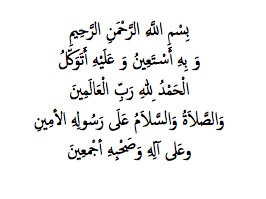
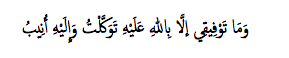

Sunuş
BEDRİ GENCER’İN ÇIĞIR-AÇICI İSLÂM’DA MODERNLEŞME” İNCELEMESİ
Elinizdeki eserin yazarı Bedri Gencer ile nisbeten geç bir tarihte, yanlış hatırlamıyorsam 1999 yılında bir toplantıda tanışmıştık. Daha sonra sürekli görüştük. Gerek yaptığımız sohbetler, gerekse çalışmaları sayesinde onun istisnaî entelektüel kişiliğini fark ettim. Karşımda olağanüstü bir tecessüs ile öğrenme ve öğretmeye kendisini adamış, önemli eserler verme potansiyeline sahip bir kişi vardı. Bu beklentileri boşa çıkarmayan Bedri, sonunda kendisinden beklenen ilk büyük eseri verdi.
İslâm’da Modernleşme, 1839-1939, hem keyfiyet, hem kemiyet itibariyle büyük bir eser. Eserin büyüklüğü, yazarın konuyu “evrensel” bir perspektiften incelemesinden kaynaklanıyor. Bundan kasıt, Doğu ve Batı’yı kuşatan, bütüncül, çok-katlı bir mukayeseli perspektiftir. İslâm dünyasının modernleşmesi, temelde Batı’nın kültürel etkisinden kaynaklandığı için akültürasyon kaynağı Batı’daki dönüşüm kavranmaksızın Doğu dünyasının zorlandığı modernleşmenin de kavranamayacağı tabiidir. Bu yüzden Gencer, önce bizzat Batı’nın yaşadığı modernleşme tecrübesinin mukadderatını tespit ediyor. Onun tespitine göre “sekülerleşme” de denen Batılı modernleşme, bir “evrensel âdil düzen” kurma fikrinden kaynaklanıyor. O, Batılı modernleşmenin arkasında yatan bu “kozmopolis ve teodise” münasebetini keşfetmek suretiyle modernleşmelerin etkileşimini bir medeniyetler karşılaşması olarak ele alıyor.
Buradan hareketle Gencer, gördüğüm kadarıyla üç-katlı bir mukayese yapıyor. Birincisi, aslında dinin dışarıdan dönüştürülmesi anlamına gelen “sekülerleşme” de denen modernleşme karşısında üç İbrahimî din, Yahudilik, Hıristiyanlık ve İslâm’ın zorlandığı modernleşmenin mukayesesi. Burada o, zorlandıkları modernleşmenin dinamiklerinin ortaklığına karşılık modernleşme tarzlarının bu üç dinin karakteristiklerine göre değiştiğine dikkat çekiyor. İkincisi, münhasıran Batılı ile İslâmî modernizmin mukayesesi. Üçüncüsü, Batılı modernlik karşısında Türk ve Arap İslâm düşüncelerinin mukayesesi. Bedri Gencer, erken modern İslâm dünyasında geliştirildiğini tespit ettiği “Türk, Arap ve Hint” olmak üzere belli başlı üç İslâm yorumunu İslâm modernizmine ilişkin genel çerçevede karşılaştırmakla birlikte derinlemesine, mukayeseli bir vak’a incelemesi için doğal olarak Türk ile Arap İslâm düşüncesi üzerinde yoğunlaşıyor. Buradaki “Arap”tan kasıt ise, Arap dünyasının merkezinde yer alan, İslâm modernizminin kaynağı Mısır.
Onun yaptığı bu çok-katlı mukayesenin en sofistike örneği, XIX. asırda zirveye çıkan medeniyetlerin karşılaşmasını tahlilinde görülmekte. Kozmopolitanizmin sekülerleşmesi sürecinde dinini medeniyete dönüştüren Batı’nın kendi meşrebine uygun olarak benimsediği “medeniyet olarak Arap İslâm”ına karşı “din olarak Türk İslâmı”nı nasıl ötekileştirdiğini, sanıyorum bugüne kadar ilk kez Bedri Gencer tespit ediyor. O, bu esnada XIX. asır Müslüman aydınlarını ayağa kaldıran ve aslında Katolik/Protestanlık arasındaki Avrupa-içi kültür savaşından dışarıya yansıtılan ünlü “İslâm, mâni’-i terakkîdir” tezindeki ilerleme karşıtı İslâm’dan kastın, bu, fıkha dayalı “din olarak Türk İslâmı” olduğunu keşfediyor. Yalnız burada vurgulanması gereken hayatî nokta, onun “Türk İslâmı”n-dan kastının, Türkiye gibi ulus-devletlerinde sıkça yanlış anlaşıldığı gibi bir “sivil din” olmadığı, tam aksine, kozmopolitanizmin bayraktarı bir topluluğun kendisini özdeşleştirdiği evrensel “bir din olarak İslâm” olduğudur.
Bu doğrultuda Gencer’in en orijinal katkılarından biri, XIX. asır Osmanlı ve Mısır düşünürlerinin İslâm’ı yeniden yorumlama tarzlarının, Batılı modernliği/medeniyeti, özgül İslâm yorumları uyarınca “meşruiyet” ve “akliyet” ile kavramsallaştırmalarına göre değiştiğini tespit etmesi. Son Osmanlı ve Mısırlı düşünürlerin gerek modernliği tasavvur, gerek geleneği tenkit ve gerekse bunlara dayanarak İslâm’ı yeniden yorumlama tarzlarının tedeyyün denen spesifik İslâm yorumlarına göre değiştiğinin tespiti, modern İslâm’ daki dinamizm ve çeşitliliğin anlaşılmasında anahtar öneme sahip. Benim de bir makalemde işaret ettiğim gibi (Mardin 2005), sö-mürge-sonrası paradigmalara meydan okuyan tek örnek olarak Türk İslâm yorumunun tarihî anlamının bu tür mukayeseli bir perspektiften tespiti, modern İslâm incelemelerine yeni bir boyut getirerek Batılı araştırmacıların ezberini bozacaktır.
Eserin büyüklüğü, ikinci olarak, yazarın seçtiği bütüncül perspektifin gerektirdiği vukufla konuyu işlemesinden kaynaklanıyor. Tabiatıyla konunun işleneceği perspektifin seçimiyle gerekli entelektüel donanım birbirine bağlıdır. Kendisinin de dikkat çektiği gibi bugüne kadar bu denli kuşatıcı bir perspektiften modern İslâm’ ın incelenememiş olması, bunun gerektirdiği Doğulu ve Batılı kültür veya İslâmî ve sosyal bilim formasyonlarını terkipteki zorluktan kaynaklanıyor. Bedri Gencer, değil sosyal bilim disiplinleri, felsefî ile dinî ilimler arasında bile ayırımın tanınmadığı geleneksel “ilm-i küll” anlayışını benimseyerek bu terkibin optimal ölçüde başarıldığı istisnaî formasyona ulaşmış biri.
O, benim tanıdığım, İslâm’ı, İslâmî kaynak ve terimleri hakkıyla bilen ender kişilerden biri. Bundan kasdım, ansiklopedik bir bilgiden çok özümsenmiş bir bilgi. O, vukuflu bir İslâm âlimi olarak birinci el, Arapça kaynaklara atıfla işlediği konularda aktif tavır alıyor; Şeyhülislâm Mustafa Sabri ile birlikte Mâtürîdiye’yi eleştirerek Eş’ariye’yi teolojik bir mezhebin ötesinde İslâmî paradigmanın kendisi olarak görmesinde olduğu gibi. Eser boyunca işlediği “şeriat, fıkıh, sünnet, bid’at, maslahat, tahsin, takbih, içtihat, taklit, telfik, ihtilâf, kader” gibi çağdaş İslâmî tartışmanın merkezinde yer alan bütün konularda onun aktif tavrını görmek mümkün. Onun Muhammed Abduh gibi İslâm modernistlerinin görüşlerinin bugüne kadarki en kapsamlı ve derin eleştirisini yaptığını söyleyebilirim. Dizininden anlaşılacağı gibi, Ubeydullah Debûsî’den Cemâ-leddîn Kâsımî’ye, Molla Fenârî’den Ali Haydar’a gelmiş geçmiş sayısız İslâm âlimine atıf yapılması, incelemedeki perspektifin genişliğini gösteriyor.
Diğer taraftan yetkin bir sosyal bilimci olarak Bedri Gencer, İslâm’da modernleşme sürecini incelemede birinci el kaynaklara atıfla tüm Batılı teorilerden yararlanıyor. Onun İngilizce “Osmanlı İmparatorluğu’nda kamuoyunun doğuşu” hakkındaki gibi başka çalışmalarını okuduğumda da teorik yoğunluk dikkatimi çekmişti. Onun çalışmaları, “kamuoyu, anayasa” gibi ele aldığı konuyla ilgili bütün teorik birikimi süzmesiyle temayüz ediyor. Bu yoğunluk, eserinin bibliyografyasından da anlaşılabilir. Kanaatimce şimdiye kadar bir eserde bu kadar zengin bir bibliyografya görülmüş değildir.
Gene dizininden anlaşılacağı gibi, şimdiye kadar bu tür bir eserde bu kadar Batılı aydın ve teoriye atıf yapıldığı da görülmüş değil. Gencer, örneğin, Batı ile İslâm’ın modern karşılaşmasının mantığını, bugün dünyada ve Türkiye’de unutulmaya yüz tutan Toynbee’ nin “tahaddî ve karşılık” denen akültürasyon modelinden yararlanarak açıklıyor. Batılı modernleşmenin kozmopolis vizyonunun dönüşümü olarak açıklanmasında Türkiye’de ne kadar tanındığını bilmediğim Stephen Toulmin’den yararlanıyor. O, keza Reinhart Koselleck ve Reinhard Schulze gibi Türkiye’de isimleri bile zor bilinen Batılı bilginlerin teorilerine atıfla İslâm’da modernleşme sürecini açıklıyor. Gencer, aslında Aydınlanma denen Batılı modernleşme sürecini açıklamayı hedefleyen bu bilginlerin teorilerinden hareketle İslâm’da modernleşme sürecini evrensel perspektiften bir “medeniyetler karşılaşması” olarak çözümlemeyi başarıyor.
Hatta o, bununla kalmayarak modern aktivizmi açıklamak için daha da derine iniyor. O, “hümanizm” ve “devrimcilik” denen dünyayı değiştirme iradesinin her yerde mistisizmden kaynaklandığı, Batı’da Jacob Boehme ve Christian Thomasius gibi büyük mistiklerin temsil ettiği bu vizyonun Isaac Luria ile başladığı ve onun da Muhyiddîn İbni ‘Arabî’den etkilendiği gibi çarpıcı bir bulguya ulaşıyor. Osmanlı’da başlıca Şeyh Gâlib’de görülen bu mistik-hüma-nistik eylem vizyonu, daha derine inildiğinde Seyyid Ahmed Han’ dan Muhammed İkbal’e, Namık Kemal ve Ziya Gökalp’tan Ce-mâleddîn Afgânî ve Muhammed Abduh’a bütün XIX. asır Müslüman aydınlarında görülebilirdi, Gencer’e göre. Isaac Luria’dan Zi-yaeddîn Gümüşhanevî’ye bu çarpıcı vizyon ortaklığının keşfini ona borçluyuz.
O, böylece evrensel bir perspektiften İslâm’da modernleşme sürecinin ne derece köküne inilebileceğini, konunun incelenmesinin sınırlarını bize gösteriyor. Bununla birlikte Gencer, Batılı teorileri sadece İslâm’ın modernleşmesini analize yarayacak araçlar olarak ödünç alarak kullanmıyor, aynı zamanda yeri geldikçe bunların orijinal eleştirisini yapmaktan da geri durmuyor. Örneğin ona göre Max Weber’in Batılı modernleşme sürecini esas aldığından yanıltıcı olarak kavramsallaştırdığı “özsel veya değersel-akliyet”, aslında “meşrûiyet” anlamına geliyor. Gencer, İslâm dünyasına karşı tavırları açıklarken Batı’da Protestanlık ve liberalizm gibi teolojik ve felsefî ekoller arasındaki gizli münasebete, klasik ile modern liberalizmler arasındaki farka dikkat çekiyor. Bu bakımdan eser, sadece İslâmî değil, aynı zamanda Batılı modernleşme sürecinin de orijinal bir tahlili olarak okunabilir.
Bedri Gencer’in benimsediği Alman geleneğine özgü mukaye-seli-tarihî perspektifin önemi, özellikle kavramların izini sürmede görülüyor. O, bizde nadir görülen bir yaklaşımla bir taraftan eti-moloji-filoloji sayesinde orijinal, kök anlamlarına inerek kavramların “arkeolojisi”ni, diğer taraftan Reinhart Koselleck tarafından geliştirilen begrijfsgeschichte (kavram tarihi) perspektifinden örneğin “millet, devlet” gibi kavramların anlamlarının zaman içinde nasıl değiştiğine bakarak “sosyolojisi”ni, diğer taraftan da kavramların farklı dillerdeki karşılıklarını bularak “tercüme”sini yapıyor. Örneğin Batı dillerinde kullanılan reason kavramının aslında akıl değil, hikmet anlamına geldiğini, Latince ve Almanca decorum ve bildung kavramlarının İslâm ahlakının merkezî kavramı edeb’e tekabül ettiğini ondan öğreniyoruz. Özellikle İngilizce ve Almancada olduğu gibi tarihî sözlüklerden mahrum dilimizde kanaatimce bu tür bir çaba daha da önem arz ediyor. Bu arada onun dile hâkimiyetini, sağlam ve akıcı üslubunu da takdirle belirtmek lazım.
Gencer, çalışma boyunca Doğu ve Batı düşüncesine eşit vukufunu gösteriyor; Batı düşünce tarihine atıfla İslâm dünyasında klasik ile modern deizmler ve rasyonalizmler arasındaki farkın, Batı düşüncesinde estetik ile yararcılığın doğuşu arasındaki ince etkileşime atıfla Muhammed Abduh’un nasıl “hüsn ile maslahat” kavramlarını dönüştürerek Batı-tarzı yararcı bir İslâm anlayışına kaydığının açıklamasında olduğu gibi. Okuyanlar, eserde birçok orijinal, çarpıcı tahlille karşılaşacaktır. Midhat Paşa ile Cemâleddîn Afgânî örneklerinde anayasalcılık ile mesihçilik arasındaki ince ilişkinin, aslında ortak bir Şî’î politik kültüre dayandıkları halde Namık Kemal ile Cemâleddîn Afgânî’nin modernlik karşısında niçin zıt istikametlerde bir kimlik arayışına giriştiklerinin tahlili, bunlara örnek verilebilir. Gencer, özellikle mesihçiliği devrimciliğe dönüştüren Karl Marx ile mukayese yoluyla kariyerini analiz ederek çağdaş İslâm dünyasının en tartışmalı kişisi Cemâleddîn Afgâ-nî bilmecesinin çözüm yolunu da gösteriyor.
Bedri Gencer’in bu kadar yoğun bir inceleme sonunda ulaştığı, özellikle Türk sekülerleşmesinin tarihî dinamikleri ve anlamına dair sonuçlar da oldukça önemli. Ona göre sekülerleşme, küresel bir tarihî devir olarak ulus-devletlerine özgü, İbni Haldun’un terimiyle “nesep asabiyeti”ne dayalı bir kolektivite olarak “ulus” ile tüzel bir kişi olarak “devlet”in kaçınılmaz gereği. Diğer taraftan o, süregelen zıt perspektiflerden farklı bir perspektiften bakarak, M. Kemal’in “hissinin babası” Namık Kemal’in öngördüğü üzere, Batı’ daki gibi normatif yerine şeriatın askıya alınması şeklinde mekanik bir sekü-lerleşme olarak gerçekleşen Türk modernleşmesinin aslında İslâm idealine dayalı Türk kozmopolitanizminin sürekliliğini gösterdiği sonucuna varıyor. Bu çalışmanın, Gencer’in Türkiye’yi merkezine yerleştirdiği İslâm dünyasının nereden gelip nereye gittiği hakkında okuyanlara önemli bir vizyon kazandıracağı muhakkaktır.
Evet, eser, gerek niteliği, gerek niceliği bakımından ciddî bir okumayı gerektiriyor. Bedri Gencer’i bu parlak başarısından dolayı tebrik ederken eserinin hak ettiği ilgiyi görmesini temenni ediyorum. Onun bu kitabıyla gerek Türk sosyal bilim, gerekse de dünya modern İslâm literatüründe bir çığır açtığını söylemek mübalağa olmayacaktır. En kısa sürede İngilizce yayınlanması, kitabın dünya çapında öneminin bilinmesini sağlayacaktır. Bu arada çeşitli bilimsel toplantılarla “Bedri Gencer’in eseri vesilesiyle İslâm ve modernleşme” konusunun tartışılması gerektiği kanaatindeyim. Onun bu abidevî eserinin ardından ona bağlı başka önemli eserler üzerinde çalıştığını biliyor ve Türkiye gibi zor bir ülkede bu çalışmaların tamamlanabilmesi için ona gereken desteğin verilmesini diliyorum.
Etiler, 15 Kasım 2008 Şerif Mardin
İKİNCİ YAYINA ÖNSÖZ

Bir eserin ikinci yayınına yazılan önsöz, temelde birinci yayının bir muhasebesiyle ikinci yayında yapılan değişiklikleri konu alır. Bizimki gibi kapsamlı ve iddialı bir eserin ilk yayınına gösterilen ilgi derecesinin, yazarı kadar okuyucuları için de merak konusu olması tabiidir. Tabiatıyla doğrudan eser ve yazarından ziyade içeriğine, ele aldığı konulara atfedilen önemi, onun da ötesinde ülkenin kültürel seviyesini göstermesi bakımından bu ilgi, merak edilmektedir. Gerçekten okuyucuların bir kısmı çeşitli vesilelerle bir taraftan yazarı olarak bize eserin gereken ilgiyi görüp görmediğini sorarken, bir kısmı da yakınma yollu gereken ilgiyi görmediği kanaatlerini aktardılar. Burada kasd edilen esere gösterilen ilginin tirajıyla özdeş olmadığı malumdur.
Bu hususu, bardağın boş ve dolu kısmından bakarak iki açıdan değerlendirmek mümkündür. Bardağın boş kısmından bakıldığında gerçekten çalışmamızın kamuoyunda gereken ilgiyi görmediği söylenebilir ki bunu da özel-mikro ve genel-makro olarak iki sebepler dizisine bağlamak mümkündür. Özellikle öğrenci kesimin şikâyet ettiği fiyatının yüksekliği gibi faktörler yanında eserin resmî ile fiilî çıkış tarihleri arasındaki farklılık gibi yaşadığı bazı teknik talihsizlikler de bu ilgi düşüklüğünde rol oynamış olabilir. Ancak bunu, temelde genel-makro sebeplere bağlamak daha isabetli olacaktır. Problem, aslında sağlıklı bir kültür ortamının kaybında yatmaktadır.
Çeşitli vesilelerle ifade ettiğim gibi, Osmanlı’da somutlaşan geleneksel kültür hayatımız aslında camiden çıkan iki kuruma dayanırdı: medrese ve tekke. Medrese, ilim, tekke, hikmet yuvasıydı; ilim, medresede alınır, tekkede hazm edilirdi. XIX. asır Osmanlı kültür hayatının kalbinin attığı bir akademi olarak görülebilecek Murad Molla Tekkesi, bunun tipik örneğiydi. Tekkelerin kapandığı Cumhuriyet’in başlarında bile “Bana kâfiri getir, kibirliyi getirme” diyen Abdülaziz Bekkine (1895—1952) kuddise sirruhû hazretlerinin Türkiye’nin kültür hayatına vurduğu gizli damga, geleneğin direnişini göstermeye yeterdir.
Dolayısıyla bu kurum ve kanalların tamamen kaybolduğu ülkemizde artık kültür hayatının değil cılızlığından, varlığından bile söz etmek zordur. Bu yüzden değil bizim gibi bir âcizin, son Osmanlı ve Cumhuriyet devrinde yaşamış pek çok kıymetin, örneğin merhum Ali Yakup Cenkçiler’in “asrın Gazâlî’si” olarak tanımladığı Mustafa Sabri ve başka âlimlerin, hatta Namık Kemal, Ali Süavi, Ziya Gökalp gibi isimlerin bile eserleri, fikirleri, henüz anlaşılabilmiş, değerlendirilebilmiş değildir. Maalesef bugün Türkiye, siyasette olduğu gibi kültürde de işlerin ahbap-çavuş ilişkileriyle yürüdüğü, vülger bir magazin, “fast-food” kültürünün ve sığ ve sıcak siyasetin sağlıklı düşünme ve iletişim imkânını yok ettiği bir ülke haline gelmiştir.
Lafa gelince hep orijinal telif eser çıkmadığından, hiçbir konunun derinlikli ve kapsamlı bir şekilde incelenmediğinden yakınılan ülkemizde bazı akademisyenlerin bile çalışmamıza verdikleri “Bugün bu kadar kalın bir kitabı kim okuyacak?” türünden basit tepkiler de başka bir ders oldu bizim için. Bugün yaşasalardı Gazâlî gibi hacimli eserler veren âlimler de herhalde “Git, İhyâyı kısalt da gel!” gibi tepkilerle karşılacaklardı. Ancak bize düşen, kâinatta hiçbir şeyin kaybolmadığı, her emeğin er-geç karşılığını bulacağı inancıyla hasbî ve mütemadî olarak çalışmaktır.
Şerif Mardin’in lûtf ettiği sunuş, esere hasbî okuyucuların ilgisini çekmeye vesile olurken bunu kendilerine zımnî bir tahaddî olarak algılayan aydınlar da oldu. Burada problem, geleneksel mutluluk vesilesi olarak “paylaşılacak hikmet” yerine özellikle moder-nizmle pekişen, bir iktidar vesilesi olarak “kullanılacak ilim” anlayışının modern çağda yaşayan Müslüman aydınların zihniyetlerine de sirayet etmesinden kaynaklanmaktadır; “Yedi derviş bir kilime sığmış, iki sultan (aydın) yedi iklime sığamamış” sözünün de belirttiği gibi. Bize düşen, her halükârda saf ilim değil, hikmete, dervişliğe talip olmaktır.
Buna kar ş ı l ı k barda ğ ı n dolu k ı sm ı ndan bakt ı ğ ı m ı zda ise eserimizin çok ciddî bir ilgi gördüğünü söyleyebiliriz. Gerçekten birçok yazar yazılarıyla, okur, mesajlarıyla yazılı veya sözlü olarak kitapla ilgili takdirkâr kanaatlerini dile getirdiler. Anadolu’daki üniversitelerde bazı ilahiyat kökenli genç akademisyenler, kitabı paradigmalarını değiştiren, kendilerine bir vizyon veren bir eser olarak değerlendirdiler. Çıktıktan sonra kitapla doğrudan ve dolaylı ilgili olarak yurt içi ve dışında çeşitli formatlarda elliye yakın programa katılmamız, esere gösterilen hasbî ilginin somut bir göstergesi olarak alınabilir.
Bu süreçte aldığım tepkiler, kitabın ikinci yayını için revizyonunda yol gösterici oldu. Bazı okuyucuların eserde kullandığımız çeşitli tabirlere takıldıklarını gördüm. Örneğin birinci yayının önsözünde de açıkladığım gibi, “İslâm’da modernleşme” tabiri, kelime ekonomisinden kaynaklanmaktadır. Vahy edilmiş herhangi bir din gibi İslâm’da mutlak anlamda bir modernleşme mümkün değildir. Bununla kasd edilen, İslâm dünyasında ve Müslümanların düşünce tarzında değişmedir. Gene bazı okuyucuların takıldığı “İbrahimî dinler” de mutlak çoğulcu anlamda değil, tarihî olarak kullandığımız bir tabirdir ki fıkıhta kullanılan “ehl-i kitap” tabiriyle kasd edilen de budur. “Din olarak Türk İslâmı/medeniyet olarak Arap İslâmı” ayırımı da bizim değil, Batı’da Hıristiyanlık içinde yapılan ayırım uyarınca sekülerleşmenin ajanı Protestanlığın gözünden yapılan bir ayırımdır.
Bazı genç okuyucular, terminolojik yoğunluğu hayli yüksek çalışmaya bilinmeyen terimler için bir lügatçe eklenmesini istediler. Burada “bilinmeyen” elbette izafî bir şeydir. Eseri bir tür ansiklopediye dönüştürecek bir lügatçeyle “eskatoloji, teodise, deizm, agnostisizm” gibi tarifi ilgili kaynaklarda bulunabilecek terimler yerine “nomisizm, ortogenez” gibi yaptığımız yeni kavramsallaştırma-lar için gerekli açıklamaları verdim.
Bunlar dışında zor anlaşılan bazı ifadeleri gözden geçirerek üslubu daha akıcı hale getirmeye çalıştım. Bu yayında kitabın ana yapısı ve argümanlarını korumakla birlikte özel ve genel sebeplerle önemli bazı tadilat yaptım. Özel sebeplerin başında bir zorunluluktan kaynaklanan çalışmanın kapsamlılığı gelmektedir. Birincisi, İslâm dünyasının dönüşümünü ilk defa bir bütün olarak kavrama niyeti, bizi çalışmanın kapsamını bu kadar geniş tutmaya sevk etti. İkincisi, mevcut teorik perspektiflerin yetersiz kaldığı durumlarda aynı anda hem kavramsallaştırma, hem de buna göre çözümleme, örneğin ideolojileşme örüntülerini analiz için neredeyse yepyeni bir kavramsallaştırma yapmak zorunda kalmamız, tabiatıyla çalışmanın hacmini büyütmüştür.
Daha önce bunları uzun vadede müstakil çalışmalara dönüştürdükçe izleyen yayınlarda eserin hacminin azalacağını söylemiştim. Bu yayında görüleceği gibi, Burke ile Cevdet arasındaki mukayeseyi Hikmet Kavşağında Edmund Burke ile Ahmed Cevdet başlıklı ikinci kitabımıza dönüştürdüğümüz için çıkardık. Osmanlı İslâm yorumuyla ilgili kısmı da ayrı bir çalışmaya dönüştürdük.
Kitabın bu ikinci yayınında bizi tadilata sevk eden ana genel sebep ise ilmî gelişmedir. Bilindiği gibi gerek küllî, gerekse de ferdî bakımdan ilim, sürekli bir gelişme içinde olduğundan yazdıklarımızı da sürekli gözden geçirme ihtiyacı duymamız tabiidir. Bu gelişmeye göre kullandığım bazı terim ve tezleri gözden geçirerek daha da rafine hale getirdim, ilim dünyasında yeni çıkan önemli kaynaklara atıfla bibliyografyayı zenginleştirdim.
Evvelce de ifade ettiğim gibi çalışmamız, İslâm dünyasında modernleşme sürecinin en kritik safhası sayılan yüz yıllık bir tarihî kesite odaklansa da bu, bitmiş değil, halen devam eden bir süreçtir. Dolayısıyla bu tarihî arkaplan ışığında İslâm dünyasında modernleşme, sekülerleşme sürecinin çağdaş uzantılarını daha net görme imkânı buldum. Bu düşünümün ürünü çalışmalar da inşallah çağdaş İslâm’da modernleşme konusunda yapacağımız müstakil bir incelemenin taslağını ortaya çıkarmaya vesile oldu.
Batı ile İslâm dünyasında doğrudan karşılaşmadan tedricen uzlaşmaya geçilen bu süreçte Müslüman zihinlerdeki sekülerleşme de derinleşmiştir. Çağımızda İslâmî ilim geleneğinden koptukça se-külerizmin etkisine açık hale gelen Müslüman aydınlar, ciddî bir kafa karışıklığı içinde bulunuyorlar. Özellikle sömürge-mağduru Müslüman ülkelerdeki aydınlar, zihnen ne kadar sekülerleştikleri nin farkında bile değiller. Bugün “İslâm medeniyetinin değerleri” diye söze başlayan bir Müslüman aydın, farkında olmadan seküle-rizmin kapanından konuşuyor demektir. Zira, bizim işaret ettiğimiz gibi, medeniyet (civilization) de, değer (value) de doğrudan seküler kavramlardır. Değer, geleneksel dünyada karşılığı olmayan, Batı’da kapitalizmin getirdiği değişim ve fiyat kavramlarıyla ortaya çıkmış bir terimdir. Doğusuyla Batısıyla bir bütün olarak geleneksel dünyada, kelam kitaplarında “hüsn ü kubh” bahsinde geçen modern anlamda tek bir değer vardır: hüsn=güzellik. Onun altında toplanan adalet gibi tüm kavramlar, modern anlamda birer değer değil, edeptir. Soyut bir değer değil, “Bir dereden bile abdest alırken israf etmemek” gibi somut bir edep olarak adaletin ölçüsünü veren ise sünnettir.
Bizim savunduğumuz, bütün bu gizli seküler kavramların reddi şeklinde bir tür fundamentalizm değil, hikemî-aslî ile seküler-arızî terminoloji arasındaki farkın bilincinde olarak konuşmamız gerektiğidir; hikemî-aslî tasavvur tarzına dönüş imkânını verecek bu bilinçtir. Bugün Müslüman aydınlar bu tür kavramları sorgulamadan veri olarak konuştukları veya “ben aslında bununla şunu kasd ediyorum” gibi semantik zorlamalarla vakit kaybettikleri için bir çıkış yolu bulunamıyor. Malum, lügatte yiğitlik olmaz.
Kitabın çıkışından sonra pek çok hasbî okur ve dost, ilgi ve katkılarıyla bana güç verdiler. Bunların hepsini burada saymam imkânsız. Sadece temsil kabilinden anacağım aziz dostlarım Alparslan Açıkgenç ve Tanel Demirel ile tashih sürecinde yardımcı olan sevgili kardeşim Bekir Belenkuyu ve eserin itinalı bir şekilde yeniden yayınına talip olan Doğu Batı Yayınları yetkililerine içtenlikle teşekkür ederim.

Fatih, 2 Nisan 2012 Bedri Gencer
BİRİNCİ YAYINA ÖNSÖZ
Elinizdeki eser, 1998 yılında İstanbul Üniversitesi SBF Uluslararası İlişkiler Bölümü’nde tamamladığımız İslâm Modernizmi ve Osmanlı Devleti: Osmanlı ve Mısır İslâm Modernizmi Deneyimlerinin Karşılaştırmalı Bir İncelemesi, 1839-1939 başlıklı doktora tezini yayına hazırlama fikrinden doğdu. Benzer çoğu girişimde olduğu gibi bu, sonunda tematik ortaklık dışında tezden tamamıyla bağımsız bir çalışmaya dönüştü. Tezde sosyolojik perspektiften Osmanlı ile Mısırlı aydınların düşüncelerini karşılaştırarak XIX. asırda doğan İslâm modernizmini incelemeye çalışmıştık. Burada İslâm dünyasının modernleşmesi, temelde Müslüman aydınların fikirlerini etkileyen arkaplan olarak incelenmişti. Tezi yayına hazırlamaya girişince İslâm dünyasında modern Batı medeniyetiyle karşılaşmayla başlayan derin dönüşümün tam tahlilinin, doğal olarak bir doktora tezinin sınırlarını aşan çok daha geniş, bütüncül bir perspektif gerektirdiğini gördüm. Bu konuda dünya çapında gördüğüm boşluk, “dünyayı kurtarmak üzere gönderilmiş bir Koç” olarak bana bu yeni, zor çalışmaya girişme cesareti verdi.
XX. asrın sonlarına doğru Batı modern-sonrası çağa geçerken İslâm dünyası XIX. asırda modern Batı ile karşılaşmasının muhasebesini sürdürmektedir. Elinizdeki eserin, bu hesaplaşma sürecinde bir dönüm noktası oluşturduğuna inanıyoruz. Temasını özetleyen şu soru, çalışmamızın niteliğini anlatmaya yeter: Batılı kozmo-politanizmin dönüşümü, modern Batı/Doğu karşılaşmasını nasıl etkilemiştir? Özet kısmından da anlaşılacağı gibi eserimiz, İslâm’da modernleşme sürecini Batı ile Doğu’nun bu büyük karşılaşması bakımından ele alan dünyadaki ilk çalışmadır. Stephen Toulmin (1992) gibi yazarların da dikkat çektiği gibi modernleşme veya se-külerleşme, Batılı kozmopolis projesinin dönüşümünden başka bir şey değildir. XIX. yüzyılda zirveye çıkan bu süreç, kozmopolitaniz-min hedefini oluşturan her yeri, özellikle Batı’ya en yakın noktada yer alan Osmanlı liderliğindeki İslâm dünyasını derinden etkilemiştir.
Dolayısıyla ancak Batılı modernleşme sürecine nüfuzla İslâm dünyasının geçirdiği derin dönüşüm kavranabilir. Böyle mukayeseli bir perspektiften incelenmedikçe XIX. asır İslâm dünyası tarafından Batı’ya verilen karmaşık tepkilerin kaynağı da anlaşılamaz. Bu itibarla çalışmamız, sadece İslâm’da değil, aynı zamanda Batı’da modernleşme, “mukayeseli modernleşme ve modernizmler” olarak da okunabilir. Daha yakından bakıldığında Batılı ve Doğulu mo-dernizmlerin iki açıdan karşılaştırılmasının gerektiği görülecektir. Birincisi, İslâm modernizminin genel olarak Batılı modernizmle mukayesesi, ikincisi, Protestan-Cizvit kaynaklı bu Batılı moder-nizm karşısında üç İbrahimi din, Yahudilik, Hıristiyanlık ve İslâm’ ın zorlandığı modernizmin mukayesesidir. Çalışmada yeri geldikçe bu üç İbrahimî dinin aydınlarının modern düşünce ve hayat tarzı karşısında aldıkları tavırlardaki ilginç ortaklıklara dikkat çektim. Bu arada bu konuda da dünya çapında hayrete değer bir boşluk olduğunu gördük.
Arapçada “talebü’l-küll, fevtü’l-küll” (her şeyi istemek, her şeyi kaçırmaktır) sözünün de anlattığı gibi, böyle iddialı bir yaklaşımla bu kadar kapsamlı bir çalışmaya girişmenin avantaj kadar risk içermesi de doğaldır. Kimileri, çalışmanın her bölümünü ayrı bir kitap olabilecek çapta örneğin “Osmanlı ve Mısır İslâm yorumları, sosyal bilimin doğuşu” gibi başlıkları ayrı çalışmaların konusu olarak görebilirler. Ancak İslâm dünyasının dönüşümünü ilk defa bir bütün olarak kavrama niyeti, bizi çalışmanın kapsamını bu kadar geniş tutmaya sevk etti. Bu şekilde İslâm dünyasının dönüşümü bir bütün olarak görüldükten sonra ileride eserin bazı bölümlerinin ayrı kitaplara dönüştürülmesi düşünülebilir. Yani avantajlarının dezavantajlarına ağır bastığı kanaatine vardığımızdan dolayı böyle bir perspektif benimsedik. Bu acil ihtiyaca rağmen bugüne kadar Türkiye’de ve dünyada böyle bütüncül bir perspektiften modern İslâm’ın incelenmesini engelleyen faktörlere ikinci bölümde dikkat çektim.
İslâm’da Modernleşme, 1839-1939 başlığı, çalışmamızın içeriğini yeterince yansıtır. Burada kasd edilen, etkileşim halinde hem İslâm’da, hem de İslâm dünyasında, hem düşünsel, hem toplumsal, modernlik ve modernizm yönünde süregelen bir değişme sürecidir. Bu sürecin halen devam etmesinden dolayı başlıktaki tarih kesiti, sadece incelemenin odaklanacağı 100 yıllık kritik bir dönemin sınırlandırılmasını ifade eder. Tahmin edileceği gibi 1839, Tanzimat Fermanı’nın ilan edildiği, 1939 ise İkinci Dünya Savaşı’nın başladığı yıldır. Gerçekte yapılan analizler, bu tarihlerin çok öncesine ve sonrasına uzanır. Daha ileri bir tarih alınacak olsa kanaatimce son önde gelen İslâm âlimi olarak Şeyhülislâm Mustafa Sabri’nin vefat tarihi 1954 alınabilir.
Ayrıca burada “İslâm’da modernleşme” tabirini mecazen kullandığımızı da belirtelim. Vahy edilmiş herhangi bir din gibi İslâm’da da hakikî anlamda bir modernleşme mümkün değildir. Burada kasd edilen, mecâzî anlamda Müslüman aydınların düşünüşündeki modernleşmedir. Bu bakımdan İngilizcede olduğu gibi Muslim modernism deyimi maksada daha uygun düşse de Türkçede “Müslüman modernizmi” deyimine göre dile daha kolay geldiği için “İslâm modernizmi” deyimini kullanmayı yeğledim.
Konunun kompleks niteliğince incelemede benimsediğimiz bütüncül perspektifi özetleyen ana kavram “mukayese”dir. İbni Haldun’dan Weber’e mukayese, sosyal bilimlerin ana metotlarından biri olarak kabul bulmuştur. Biz de çalışmamızda konuyu iki ana bakımdan mukayeseyle inceledik. Birincisi, genel olarak Batı’da ve İslâm’da modernleşmelerin, ikincisi, çağdaş İslâm’da Osmanlı ve Mısır ile örneklendirilen geleneksel ve modern düşüncelerin mukayesesi. Çalışmamızda XIX. asır İslâm dünyasında modernleşmeye karşı alınan bütün tavırları modern İslâm incelemeleri için bir analiz çerçevesi oluşturmak üzere kategorileştirirken, İslâm düşüncesindeki paradigmatik değişimin derecesini göstermek için Osmanlı ve Mısır İslâm düşüncesinin temsilcileri olarak alınan Namık Kemal ve Muhammed Abduh örneklerinde “gelenekselcilik/moder-nizm” olarak iki ana tipe dönüştürerek karşılaştırdık.
Eserde görüleceği gibi Abduh’a yakıştırılan modernizmden kasıt, sadece geleneksel paradigmadan kopuş anlamında bir pasif modernizmdir. Çağımızda modernizmin tahakkümü sonucu gelenek ve modernliğe bağlı olarak gelenekselcilik ve moderncilik, birincisi olumsuz ve ikincisi olumlu anlamda normatif kavramlar haline getirilmiştir. Hâlbuki bu kavramlar normatif yerine deskriptif olarak alındığı takdirde Ahmed Cevdet veya Namık Kemal gibi gelenek-selci düşünürlerin aslında reel ile ideali uzlaştırmaya yönelik realiteyi açıklama girişimlerinde Abduh gibi aydınlarınkinden çok daha derin bir düşünce geliştirdikleri açıkça görülecektir.
Diğer taraftan Max Weber’in sosyolojisi için kullanıldığı gibi mukayeseli perspektif, tarihî ile tamamlanır. İncelememizin Os-manlı-merkezliliği, benimsediğimiz tarihî perspektifin gereğidir. Batılı bilim dünyasında XIX. asır İslâm’ının genelde sömürge-son-rası perspektiflere göre Mısır-merkezli olarak incelenmesi, modern sosyal bilime özgü anakronizmin sonucudur. Modernizme özgü bu kusur yanında ana sebep, eserde gösterdiğimiz gibi, bir türlü yenilemeyen “din olarak Türk İslâmı”nın yerine XIX. asır oryantalizmi tarafından sömürgeleştirilecek “medeniyet olarak Arap İslâmı”nın geçirilmesidir. Oysa XIX. asır İslâm dünyasının lideri Osmanlı Devleti’dir. Sömürge-sonrası paradigmalara meydan okuyan tek örnek olarak Osmanlı’nın kendine özgü, dinamik İslâm yorumunun mukayeseli bir perspektiften tespiti, zannediyoruz modern İslâm incelemelerine yepyeni bir boyut getirecektir.
Çalışmamızın “mukayeseli-tarihî” perspektifi, “deskriptif, analitik, didaktik ve eleştirel” perspektifle tamamlanmıştır. Deskriptif bakımdan çalışmayı okuyanlara İslâm dünyasındaki sosyal ve düşünsel değişim süreci hakkında yeterli bir fikir vermeyi hedefledim. Bu arada Tanzimat, İstibdat, Meşrûtiyet gibi dönemlere alışılagelmiş açıklamaların ötesinde yeniden bakmaya çalıştım ki bu bakışın orijinallik derecesinin takdiri elbette okuyuculara aittir. Kitapta okuyucunun tüm yönleriyle modern İslâm dünyasındaki değişim sürecinin zengin bir panoramasını bulacağını umuyorum.
İkincisi, olabildiğince yuvarlak sözlerden kaçınarak problematik durum ve fikirleri açıklamaya, sebep-sonuç ilişkisi kurmaya, “bir, iki, üç …” diye sebepleri sayarak analiz etmeye çalıştım. Ayrıca yıllardır üniversitede ders veren bir öğretim üyesi olarak, işlemselleştirilmiş temel kavram ve teorilere dayalı analizler yapmaya çalışarak çalışmanın genel okuyucular ve öğrenciler için didaktik bir işlev görmesini de hedefledim. Eserimizin belki en önemli yönlerinden biri, sosyolojik perspektifle zamanla uğradıkları semantik çarpılmalara dikkat çekerek gerek yerli, gerekse yabancı kavramları aslî anlamlarına ircaya çalışmasıdır. Bu yönüyle çalışmamızın Türkiye gibi kültür savaşının kızıştığı ülkelerde sağlıklı fikrî faaliyeti önlemek için körüklenen kavram kargaşasının giderilmesinde önemli bir rol oynayacağına inanıyorum.
Çalışmada aynı zamanda Batılı modernizm kadar Mısır moder-nizmine yönelik “objektif” bir eleştirel perspektif benimsedik. İşin doğrusu bu çalışmaya girişmeden önce Davudoğlu (1997)’nunki gibi tâ çocukluk zamanlarımdan beri okuduğum eserlerde Abduh’a yöneltilen ağır eleştirilerin temelde onun geleneksel İslâmî paradigmadan ayrıldığı gerekçesine dayanan muhafazakâr zihniyetten kaynaklandığını sanıyordum. Hâlbuki bu inceleme sürecinde nüfuz edince aslında Abduh’un düşüncesinin ne kadar eğreti ve çelişkili olduğunu, eleştirilerin, düşüncelerinin sünnî paradigmadan sapmasından çok bu mantıkî zayıflığından kaynaklandığını gördüm. Dolayısıyla Türkiye’de de olduğu gibi bu kadar zayıf bir düşüncenin halen tutulmasının ancak çeşitli psikolojik saiklerle açıklanabileceği sonucuna vardım.
Çalışmada Abduh ve Afgânî’nin fikirlerinin esaslı bir eleştirisini yaparak bütün bu çelişkileri gösterdim. Burada özellikle XX. yüzyılın ikinci yarısında İslâm dünyasını bir hayli meşgul eden Cemâ-leddîn Afgânî’yi az-çok muamma olmaktan çıkardığımı sanıyorum. Aslında ortak Şî’î politik kültürüyle yetiştikleri halde Namık Kemal ile Cemâleddîn Afgânî’nin Batı’ya verdikleri karşılıkların niçin kritik olarak değiştiğinin analizi, sanıyorum çoğu kişiye çarpıcı gelecektir.
İslâm modernizminin gerçek babası sayılan Afgânî mummasını çözmek, İslâm dünyasının problemlerini çözmek değil, bu problemlerin kaynağına inmek anlamına geliyor. Evet, eserimizin hedefi, İslâm dünyasının problemlerini çözmekten ziyade bu problemlerin kaynağına inerek neler olduğunu tespit etmektir. Zira kalıcı bir çözüm arayışı, ancak hakikî problemlerin tespitiyle mümkündür. Örneğin İslâm dünyasının yaşadığı bunalımın özünde sanıldığı gibi bilgiden ziyade ahlak ve irade kusurunun yattığı sonucuna vardık. Bu gerçeğin farkına varmak, çözüm yolunu da bulmak demektir.
Konunun merkezilik, genişlik ve karmaşıklığından dolayı çalışmanın sonuçları, dünden bugüne uzanan “özet, sonuçlar ve projeksiyonlar” karışımı bir değerlendirmeye dönüştü. Burada başlıca, İslâm’ın yakın modernleşme tecrübesi ışığında Türkiye-merkezli İslâm dünyasının nasıl bir istikamet tutması gerektiği hayatî sorusuna cevap aradım. Ulus-devletinin halet-i ruhiyesinin ufuklarını daralttığı Türk aydınları kabullensin kabullenmesin, hakikat değişmez: Türkiye’nin kaderi, İslâm dünyasının kaderi demektir.
Sayın Şerif Mardin’in okuyarak takdirini belirttiği doktora tezimizin kitap yayını için teşviki ve tavsiyesi üzerine 2000 yılında bir yayıneviyle kısa süre içinde yayını için prensip anlaşmasına varmıştık. Ancak aradan sekiz yıl geçtikten sonra çalışma, yeni bir yayınevinden bambaşka bir eser olarak gün yüzüne çıkıyor. Her kitabın bir serüveni olduğu için burada bu gecikmenin sebeplerine değinmekte yarar görüyorum. Bu aşırı gecikmeye belli başlı üç gerekçe gösterebilirim.
Birincisi, sekiz yılda araya giren sayısız maddî ve manevî, özel ve genel mazeret. Bunların ayrıntılarının okuyucuyu ilgilendireceğini pek sanmıyorum. Ancak ilmî faaliyetin “arıza” olarak görüldüğü günümüz akademik ortamında tırnaklarıyla kazıyarak bir şeyler üretmeye çalışan “sade” Türk akademisyenlerden biri olmam, sanırım bu genel mazereti açıklamaya yeter.
İkincisi, mükemmeliyetçiliğe varan aşırı titizliğimiz. Doğrusu bu yüzden iddialılık ile tatminsizlik arasında sürekli gidip geldim. Ancak insan, hele de Türkiye’nin mevcut acı şartlarında mükemmellik arayışının bir sınırı olduğunu sonunda anlayarak pes ediyor.
Üçüncü ve objektif gerekçe ise ilmî gelişmeyi yakalama kaygı-mızdır. Bu sekiz yıllık arada konuyla ilgili yurtta ve dünyada pek çok önemli yayın yapıldı. Bibliyografyada görüleceği gibi mümkün olduğunca en son çıkan yayınlara kadar ulaşarak çalışmada yararlanmaya çalıştım. Bu esnada “geç olsun, güç olmasın” tesellisiyle çalışmanın birçok mesele ve tezini zihnimde tartma ve pişirme fırsatı buldum.
Eserin içindekiler ve özet kısmından görülebileceği gibi bu kadar geniş ve karmaşık bir konunun elverdiği ölçüde iyi bir plan yapmaya çalıştım. Tekrarlardan ve laf kalabalığından mümkün olduğunca kaçınarak özlü bir açıklama sunmaya gayret ettim. Hayli kapsamlı eserden yararlanmayı kolaylaştırmak için başında “genel ve ayrıntılı” olarak iki özet verdim.
Çalışmanın olağanüstü miktarda bir kaynağa atfı gerektirmesi, bibliyografyayı ayrı bir kitap hacmine çıkarabilirdi. Bu yüzden bibliyografyada genelde metinde birden fazla geçen kaynaklarla konuyla doğrudan ilgili kaynakları topladım. Belli bir bağlamda bir kez geçen kaynakları sadece metin içindeki dipnotlarda verdim. Çalışmada hem birincil, hem de ikincil kaynakları kullandım, yerine göre her ikisine de atıf yaptım.
Eserde başlıca Türkçe, İngilizce ve Arapça yanında ikinci derecede Fransızca ve Almanca eserlerden yararlandım. Özellikle iki sebeple başka dillerden Türkçeye çevrilen kaynakları kullanmadım. Birincisi, Türkçeye tercümelerin kalitesine ilişkin yaygın güvensizlik. İkinci ve teknik bir gerekçe ise kitabın Türkçe yayınından sonra İngilizce yayınını hazırlama niyeti. Elinizdeki Türkçe yayınından sonra inşallah kitabın İngilizcesinin hazırlanışı esnasında Türkçe tercüme kaynaklara yapılan atıfların orijinallerindeki karşılıklarını aramak oldukça külfetli olacaktı. Bu sebeple üç ana dildeki eserlerin orijinallerini kullandım. Arapçadan diğer alıntılar gibi âyet ve başlıca Kenzul-’Ummâİden hadis meallerini de bizzat, Osmanlı yazarlarından alıntıları bazen sadeleştirerek verdim.
Metni ağırlaştırmamak için yayın isimleri dışında şahıs isimle-rindeki Arapça harf-i tarifleri (el-) kullanmadım. Bu arada bugün maalesef Arapça kökenli kelimelerin telaffuzunu duyarak öğrenme imkânı olmayan yeni nesillerin vahim iştibahlara düşmesini önlemek için giderek tekrar kullanılmaya başlayan uzatma işaretlerini titizlikle kullandım (kâr, tarihî vs. gibi). Bir dönem Türkiye’de aydınların enerjilerini heba eden dil mühendisliğinin ürünü “öz-üvey” Türkçe saplantısına kapılmaksızın yaşayan, akıcı bir dil kullanmaya çalıştım. Örneğin rationality karşılığında kullanılan ussallık yerine hem yaygın olarak kullanılan aklın türevi, hem de karşılaştırdığımız meşruiyet ile kafiye oluşturduğundan dolayı akliyet kelimesini kullandım. Keza çoğulu dile ağır geldiğinden dolayı İngilizce challenge’vn karşılığı meydan okuma yerine tahaddî dedim.
Özellikle telifi yıllar süren bu tür hacimli eserlerin önsözünde katkısı geçen birçok kişiye teşekkür etmek adettendir. Bizimki bu âdete bir istisna teşkil ediyor. Eser, kendine özgü yetişme ve çalışma şartlarından dolayı maalesef yayın öncesinde bu tür katkı ve eleştirilerden mahrum kalan yazarının kaleminden doğrudan gün ışığına çıkıyor. Bununla birlikte elinizdeki yayınından sonra gelecek tepkiler, kitabımızın İngilizce yayınının hazırlanışında yararlı olacaktır. Bu arada moral desteğinden dolayı Türk sosyal bilimcilerinin pîri Sayın Şerif Mardin’e teşekkür borçluyum.
2000 yılında eseri yayına hazırlamaya başladıktan kısa bir süre sonra babam Niyazi Gencer dâr-ı bekâya göçtü. Dünyada bu eserin çıkışını en çok görmesini istediğim kişi, şüphesiz akademik kariyerimin baş destekçisi, ilim aşığı babamdı. Çıkışından haberdar olacağına muhakkak inandığım bu çalışmayı ona ve anneme rahmete vesile kılmasını Rabbimden niyaz ediyorum. Bu kadar zorlu bir çalışmanın zahmetini yazarıyla birlikte ailesinin de çekmesi doğaldır. Büyükler kadar küçükler bile bu zahmeti fazlasıyla çekti. Onlara sürekli “biraz daha sabır, az kaldı, bitti-bitiyor” demeye yüzüm kalmamıştı artık. İnanıyorum ki biricik kuzularım Asude ile Fur-kan, kitabın çıkışı sevincine katıldıklarında kendilerinden çaldığım saatler için beni bağışlayacaklardır.
1986 yılında henüz 18 yaşında iken zamanın önde gelen dergisi İlim ve Sanatta yazı hayatına başladım. Neredeyse çeyrek asırlık profesyonel yazı hayatıma rağmen ilk eserimin çıkışı, İslâm geleneğine uygun olarak 40 yaşında kısmet oluyor. Bunda da bir hayır-hikmet olduğuna inanıyorum. 22 sene önce yazılmış ilk yazımızla eldeki eseri karşılaştıranlar, aynı Gazâlîci anadamar İslâm anlayışının, sünnî paradigmanın hep merkezde durduğunu görebilirler. İslâm ilminin zirvesi Gazâlî, benim ilk hocam sayılır. Merhum babamın aldığı Ahmet Serdaroğlu tercümesi İhyâ ile henüz ilkokulda tanışmıştım. Özellikle İmâm-ı A’zam ve İmâm-ı Gazâlî ile kalbî bağım hayatım boyunca sürdü ve sürecek inşallah.
1986’da yazılmış söz konusu ilk yazımda Kutub, Mevdudî gibi eserleri yoğunlukla Türkçeye çevrilen, düşünceleri sömürge mira-sıyla malûl Müslüman düşünürlerin anadamar İslâm düşüncesinitemsil edemeyeceklerini zımnen de olsa ifade etmiştim. Elinizdeki eser, bu tezin bir tasrihini simgeliyor. Tezimiz, ancak Osmanlı gibi İslâm’ı kesintisiz ve dinamik olarak yaşayan toplulukların aydınlarının anadamar İslâm düşüncesini temsil edebileceğidir. Ancak bugün aynı şeyi söylemek hayli zor görünüyor. Diğer Müslüman ülkeler gibi sert olmasa da yumuşak, kültürel sömürgeciliğe maruz kalan bir ülke olarak günümüz Türkiye’sinde İslâm’ı muhaliflerinden önce asıl savunanları bilmez, bilenler de bildiklerini uygulamaz hale geldi. “İman ile İslâm”, “şeriat ile fıkıh” arasındaki nüansı, değil ulemâdan Ahmed Cevdet, üdebâdan Namık Kemal’in bile günümüz ilahiyat profesörlerinden daha iyi bildiğini söylemek mübalağa olmayacaktır.
Eseri, rızasına uygun ve Türkiye ve İslâm dünyasını saran bu krizin teşhisine vesile kılmasını Rabbimden diliyorum. Çalışma benim için yorucu olduğu kadar öğretici ve verimli oldu; umarım okuyanlara da faydalı olur. Sonuçta kalıcı, kaynak bir eser ortaya koyduğumu umuyorum. Görüleceği gibi çalışma, konusunun kuşa-tıcılığından dolayı daha pek çok esere gebe. Onları da Rabbimin inayet ve tevfiki ile hızla meydana çıkarmayı ümit ediyorum.
Ve billâhi’t-tevfik
Fatih, 1 Kasım 2008 Bedri Gencer
ÖZET
Genel
Girişte dini medeniyete dönüştürdükten sonra küresel bir güç olarak ortaya çıkan Batı’nın İslâm dünyasına sıcak savaş yoluyla gelişinin etkisiyle Osmanlı ile Mısır’ın başını çektiği İslâm dünyasının zorlandığı kurumsal modernleşme sürecine bakıldı. Birinci bölümde kitap boyunca yapılan analizlerde kullanılacak temel kavramlarla Osmanlı ile Mısır düşünürlerinin dayandıkları kolektif İslâm yorumları tanımlandı. İkinci Bölüm’de İslâm’ın ideolojileşmesinin dinamikleri ve tarzları incelendi. Üçüncü Bölüm’de XIX. asırda kültür savaşı çağında Batılı ve Doğulu aydınları farklı istikametlerde modernleşmelere sevk eden karşılıklı din ve medeniyet algılamaları tasvir edildi. Dördüncü Bölüm’de Batı ile Doğu arasında mukayeseli bir perspektiften gelenekselci düşüncenin modernlik ve modernizmin tahaddîsine nasıl karşılık verdiği gösterildi. Beşinci Bölüm’de Batılı modernizmin arkaplanında yatan mesihçiliği devrimciliğe dönüştüren Cemâleddîn Afgânî’nin kariyeri, Karl Marx ile mukayese edilerek incelendi.
Altıncı Bölüm’de başlıca Namık Kemal ve Muhammed Abduh örneklerinde Osmanlı ve Mısırlı aydınların modernlikle hesaplaşmaya yönelik tezlerinin çıkış noktasını oluşturan geleneği eleştiri tarzları karşılaştırıldı. Yedinci Bölüm’de Osmanlı ve Mısırlı düşünürlerin yeni bir paradigmaya geçip geçmediklerine bakıldı. Sekizinci Bölüm’de Osmanlı ve Mısırlı düşünürlerin geleneği eleştiri tarzları ve benimsedikleri paradigma ışığında başlıca siyaset ve iktisat alanında yeni toplum tasarıları incelendi. Dokuzuncu Bölüm’de Osmanlı ve Mısırlı düşünürlerin özledikleri yeni toplumu kurmak üzere formel ve enformel eğitim yoluyla yetiştirilecek yeni insan tipine bakışları ele alındı. Sonuçlar Bölümü’nde Osmanlı ve Mısır düşünürlerinin modern tahaddî karşısındaki başarı dereceleri değerlendirilirken islâm’da organik bir sekülerleşmenin imkân derecesi sorgulandı.
Ayrıntılı
Giriş Bölümü’nde Batılı kozmopolitanizmin dönüşümünün geleneksel Batı/Doğu karşılaşmasını nasıl etkilediği ele alınmıştır. Burada “Doğu” ile kasd edilen, aynı ata ibrahim’den gelen dinler olarak Hıristiyan Batı’nın “uzak öteki”sini temsil eden “Yakın Doğu” yu oluşturan islâm dünyasıdır. Batı, Westphalia’nın ardından krize giren dini medeniyete dönüştürdükten sonra “hak/bâtıl dinler” şeklindeki geleneksel din-temelli ötekileştirmeyi “Batılı/Doğulu medeniyetler” şeklindeki medeniyet-temelli ötekileştirmeye çevirmiş, böylece kozmopolise yönelik geleneksel Batılı Hıristiyanlaştırma (evangelizing) misyonunun yerini medenileştirme (civilizing) misyonu almıştır. Fransız Devrimi’nden sonra Napoleon’un başlattığı sıcak savaş olarak medenileştirme hareketinin ilk doğrudan hedefi genelde islâm dünyası, özelde Osmanlı Devleti olmuştur. Onun 1798’de Mısır seferiyle başlayan Batı’nın maddî, sıcak taarruzuna islâm dünyası, Osmanlı Devleti’nin 1839 Tanzimat Fermanı ile başlattığı politik-kurumsal modernleşme ile karşılık vermiştir.
Birinci Bölüm’de kitap boyunca yapılan analizlerde kullanılacak “din, tedeyyün, şeriat, fıkıh, sünnet, bid’at, gelenek, modernlik, ideoloji” gibi islâmî ve Batılı temel kavramlar yanında, XIX. asır islâm düşüncesindeki değişimin doğasını ve derecesini değerlendirebilmek için gerekli arkaplan olarak genelde islâm düşüncesi, özelde Osmanlı ve Mısır islâm yorumları tanımlanmıştır. Tedeyyün denen belli başlı kolektif islâm yorumlarının tarihî deneyimle etkileşim sayesinde şekillenmesi, Osmanlı ve Mısır-Arap dünyasının geliştirdiği islâm yorumlarının sağlamlık derecesini de açıklar. Osmanlı ve Mısırlı aydınların modern Batılı tahaddiyle başa çıkmadaki başarı dereceleri, dayandıkları özgül kolektif tedeyyünlerin dayanıklılık derecesince belirlenecekti.
ikinci Bölüm’de erken modern islâm dünyasında ulemânın dönüşümüne bakarak XIX. asırda doğan islâm modernizmine giden yol aydınlatılmıştır. Erken modern islâm dünyasında yükselen Batı’nın etkisiyle başlayan siyasî çözülmeye paralel olarak giderek kan kaybeden ulemâ sonunda Batılı tahaddî karşısında pes etmiştir. Batılı tahaddî karşısında islâm’ı yeniden yorumlama ihtiyacı doğal olarak geleneksel bilgiyle birlikte taşıyıcısı sınıfın da değişmesine yol açmıştır. XIX. asırda az-çok islâm’a atıfla modern düşünce ve hayat tarzıyla başa çıkmak için, “seyahat, tahsil, tercüme” gibi Batı ile yumuşak karşılaşma yollarının da etkisiyle dünyayı açıklamaya yarayan fıkıh ve edebiyat gibi geleneksel disiplinlerden sosyolojiye ve âlimden aydına geçiş gerçekleşmiştir. Böylece “islâm modernizmi” denen islâm’ın yeniden yorumlanması girişimi başlamıştır. Şu ya da bu şekilde islâm’ın yeniden yorumlanması, onun az-çok ideolojileştirilmesi anlamına geliyordu. Batı’da olduğu gibi islâm dünyasında da “hakikat politikası”nın doğuşu ise beşerî hayatta “bilişsel ile normatif” arasında bir açığın zuhuruna ve dolayısıyla insan kalbinin yarılmasına yol açacaktı. Bu şekilde başlayan ideolojileşmenin karakteristiklerinin tespitinden sonra islâm mo-dernizminin tanımı, haritası ve tipolojisi çıkarılmıştır. Burada aynı zamanda modern islâm araştırmalarında temel oluşturacak bir metodoloji önerilmiştir.
Üçüncü Bölüm’de XIX. asırda Batı’nın gelişinin birinci aşamasını oluşturan Napoleon’un 1798’deki Mısır seferiyle başlayan sıcak savaş, islâm dünyasını politik-kurumsal modernleşme hareketine sevk etmişti. Bu asırda Batı’nın gelişinin ikinci aşamasını oluşturan Türk-islâm karşıtı ingiliz kültür savaşı, soğuk savaş ise Müslüman aydınları, şu ya da bu şekilde islâm’ı yeniden yorumlama arayışından kaynaklanan entelektüel modernleşmeye sevk etti. Daha geniş bir açıdan bakıldığında bu karşılaşma, Batı ile Doğu’nun birbirlerini karşılıklı ötekileştirmesi, oryantalizme karşı oksidentalizm olarak görülebilirdi. Protestanlığı ilerlemeyle özdeşleştirerek Katolik Avrupa’yı ilerlemeye karşıt diye ötekileştiren ingiliz aydınlar, seküler kozmopolitanizm kılığına sokulan emperyalizmin gerektirdiği bu Hıristiyanlık-içi ötekileştirmeyi Türklükle özdeşleşmiş islâm’a yansıtmakta gecikmedi. ingiliz aydınlar, Türklükle özdeş islâm dinini ilerlemeye karşıt, buna karşılık Araplıkla özdeş islâm medeniyetini ilerlemeye yatkın olarak sunarak “din olarak Türk islâmı” nın yerine sömürgeleştirilecek “medeniyet olarak Arap islâmı”nı geçirdiler.
Katolik modernizmi gibi islâm modernizmi de böylece “islâm, ilerlemeye karşı değildir” antitezinden doğdu. Müslüman aydınların bu tahaddiye karşı Batı medeniyetini tasavvur tarzları ise özgül kolektif islâm yorumlarınca belirlendi. Bölümde “gelenekselcilik/ modernizm” şeklinde iki tipin temsilcisi olarak alınan Osmanlı ve Mısır düşüncesi örneğinde XIX. asır Müslüman aydınları tarafından islâm’ın yeniden yorumlanması tarzının, onların Batı medeniyetini tasavvur tarzlarına, bu ise söz konusu medeniyetin tehdidini algılama tarzlarına, bu da mensup oldukları toplulukların tarihî deneyimle geliştirdikleri özgül islâm yorumlarına göre değiştiği gösterilmiştir. Batı medeniyetini, Osmanlı düşünürleri adalet değe-rince anlamlandırılan, meşrulaştırılan ideal islâmî düzenin maddeten geliştirildiği halde mânen yozlaştırılmış bir kopyası olarak algılarken, Mısır düşünürleri aklîleştirmeyle ezici bir güç kazanarak özgürlüklerini tehdit eder hale gelen insanlık tarihinde emsalsiz bir maddî medeniyet olarak gördüler. Batı medeniyetinin bilimsel-teknolojik ve endüstriyel gelişmenin ürünü maddî gücünü, âdil yönetimin, meşrûiyetin türevi olarak gören Osmanlı aydınlarına karşılık Mısır düşünürleri, Avrupa’nın sosyal düzen başarısını, akli-yete dayalı maddî uygarlığın türevi olarak gördüler. Osmanlı ve Mısırlı düşünürlerin Batılı medeniyeti farklı “meşrûiyet ve akliyet” ile karakterleştirmeleri, Batı’da olduğu gibi farklı modernizm türlerine vücut verdi.
Dördüncü Bölüm’de gelenekselciliğin bir türü olarak reformiz-min modernizmden farkı belirtildikten sonra gelenekselciliğin pasif ve aktif türleri ayırt edilmiştir. Usûl-i fıkıhta tecdit geleneğinin temsilcisi olarak Sava Paşa’nın ardından aktif gelenekselciliğin prototipi olarak Ahmed Cevdet’in kariyeri ele alınmış, daha sonra Cevdet gibi ibni Haldun’un çağdaş bir şâkirdi olarak beliren Tunuslu Hayreddîn’in düşüncesinin karakteristik yönleri tespit edilmiştir. Son olarak bölümde “geleneksel aktivizm”in tipik temsilcisi olarak Şekib Arslan’ın kariyeri işlenmiş, gerek Hayreddîn, gerekse de Arslan’ın kariyerinde Osmanlı formasyonunun etkisine dikkat çekilmiştir.
Beşinci Bölüm’de modernizmin kaynağı olarak mesihçiliğin Batı’da sekülerleşme sürecinde nasıl devrimciliğe dönüştüğü tespit edildikten sonra bunun modern islâm dünyasındaki temsilcisi olarak alınan Cemâleddîn Afgânî incelenmiştir. Afgânî, geleneksel olarak Sünnî Müslüman’ı “öteki” olarak gören bir Şî’î aydın olarak Batı/Doğu tarihî karşılaşmasını ilk fark eden olmuştur. O, tevarüs ettiği Şî’î teoloji/ideolojiden hareketle bizzat islâm’ı Doğulular adına bir medeniyet ideolojisine dönüştürerek islâm-içi geleneksel mezhebî ve sosyal ötekileştirmeleri aşacak bir medeniyetsel üst-kimlik kurmayı hedefledi. Onun geleneksel Şî’î mesihçilikten modern mesihçilik olarak devrimciliğe geçiş vizyonu Marx ile karşılaştırılarak incelenmiş ve XX. yüzyıl boyunca islâm dünyasını hayli meşgul eden “Afgânî muamması” büyük ölçüde çözülmüştür.
Altıncı Bölüm’de başlıca Namık Kemal ve Muhammed Abduh örneklerinde Osmanlı ve Mısırlı aydınların tezlerinin çıkış noktasını oluşturan geleneği eleştiri tarzları karşılaştırılmıştır. XIX. asırda Müslüman aydınlar tarafından islâm’ı şu ya da bu şekilde yeniden yorumlama arayışı, geleneğe ilişkin bir şeylerin yanlış gittiği kanaatinden kaynaklanıyordu. Bu yüzden herhangi bir islâm’ı yeniden yorumlama girişimi, kaçınılmaz olarak geleneğin eleştirisinden hareket edecekti. Bu bölümde karşılaştırılan ontolojik ve epis-temolojik hermenötik perspektiflere göre geleneğin tradisyonalistik ve modernistik1 eleştiri tarzları arasındaki farka dikkat çekilmiştir. Osmanlı ve Mısırlı aydınlar, kolektif tedeyyünlerine göre değişen tehdit ve problem algılamalarına göre gelenek veya modernliği esas eleştiri hedefi olarak almışlardır. Kabaca, Batı medeniyetini, ideal islâmî düzenin manen yozlaştırılmış bir kopyası olarak gören Osmanlı düşünürleri Batılı modernliği, akliyet sayesinde iktidar aracı haline getirilen Batılı medeniyeti hürriyetlerine kavuşmak için taklit etme gereğini hisseden Mısır düşünürleri ise islâmî geleneği eleştirmeye yönelmişlerdir.
1 Türkçede “-cılık” ile karşılanan ingilizce “-izm” kalıbı, bir akımı (moder-nizm, hümanizm, liberalizm, kapitalizm, pozitivizm vs.), Türkçede “-cı” ile karşılanan “-ist”, o akımın taraftarını (modernist, hümanist, liberalist, kapitalist, pozitivist vs.), ingilizce “-istik” kalıbı ise “o akımla ilgili şeyi” (modernis-tik, hümanistik, liberalistik, kapitalistik, pozitivistik vs.) ifade eder.
Yedinci Bölüm’de başlıca Namık Kemal ve Muhammed Abduh örneklerinde Osmanlı ve Mısırlı düşünürlerin geleneksel islâmî paradigmayı sürdürme dereceleri incelenmiştir. XIX. asır islâm dünyasında doğrudan değil, ancak islâm modernistleri tarafından dindeki geleneksel vahiy-akıl dengesinin bozulmasıyla dolaylı bir sekülerleşme görülecekti. Kemal, geleneksel Sünnî paradigmayı koruyarak vahiy ve gönlü akla hâkim alırken Abduh, vahiy karşısında akla vurgu yaparak tedricen ilâhî dinden aklî, tabiî ve pozitif bir din anlayışına kaydı. Bu süreçte ortaçağ islâm dünyasında da gündeme gelen “vahiy-akıl ve din-felsefe ilişkisi” gibi klasik tartışma konularına bağlı olarak “din-bilim” ilişkisi gibi nisbeten yeni konular da tartışma gündemine geldi. Namık Kemal, bu konularda din adına septik bir tutum benimserken Abduh, çelişkilerle dolu bir apolojetik tutum benimsedi.
Bölümde daha sonra düşünürlerin “tabiî/pozitif hukuk” ile “güzellik/çirkinlik” değerlerine bakışları incelendi. Abduh, geleneğe göre ancak vahiy sayesinde bilindiği kabul edilen aşkın güzellik/ çirkinlik değerlerinin keşfinde akıl, duyu ve vicdan gibi beşerî fakültelerin yeterliğini savundu ve Batılı aklîleşme sürecinin dayandığı yararlık anlamında maslahatı ana değer olarak aşkın güzellik değerinin yerine geçirdi. Böylece pozitivistik bir islâm anlayışına kayan Abduh ve tâbileri, dinin geleneksel iki kaynağı sünnet ile ic-mâyı inkâr ederek akıl sayesinde ve maslahat değeri uyarınca Kur’ ân-ı Kerim’den hüküm çıkarma yolu olarak kıyasa dayalı içtihadı savundular.
Sekizinci Bölüm’de Osmanlı ve Mısırlı düşünürlerin geleneği eleştiri tarzları ve benimsedikleri paradigma ışığında başlıca siyaset ve iktisat alanında yeni toplum tasarıları incelenmiştir. Namık Kemal gibi Osmanlı aydınlarının özlediği yeni toplum, eski “âdil şehrin” çağdaş şartlarda yeniden hayata geçirilmiş bir versiyonundan başka bir şey değildi; onların bütün siyasî teorisi, aslında hukukî adalet fikrinin açılımı anlamına geliyordu. Namık Kemal ve arkadaşları, çok geçmeden modernleşme sürecinde devlet ve tüzel kişilik kavramlarında tecessüm eden modern gayr-i şahsî siyasetin, sadece insanlara ait hakkın bizzat inkârıyla emsalsiz, sinsi bir adalet ihlali anlamına geldiğini dehşetle fark ettiler. Buna rağmen onlar “âdil kral” figüründe somutlaşan geleneksel şahsî siyasetle modern gayr-i şahsî, kurumsal siyaseti anayasalcılık gibi bazı tavizlerle modern şartlar altında optimal olarak uzlaştırmaya çalıştılar.
Abduh ise sadece geleneksel paradigmadan kopuşu belirten bir pasif modernizm anlamında seküler bir siyasî anlayışa kaydığı halde tutarlı bir siyasî model geliştiremedi. Bu arada gerek Osmanlı, gerekse Mısır düşünürleri kültürel değişmenin kurumsal değişmeye önceliğini fark ederek sivik eğitim yoluyla kamuoyu teşkili ve siyasî katılım gibi modern kitle politikasının altyapısının hazırlanmasının önemini vurguladılar. iktisadî konuda ise Namık Kemal ve arkadaşları, siyasî tahakkümün temelinde iktisadî iktidar ilişkilerinin yattığını fark ettiler. Kemal, özünde geleneksel iktisadî paradigmayı sürdürerek pazar, faiz gibi modern kapitalistik ekonomik kavramları reddederken siyasî seferberliği destekleyecek bir iktisadî seferberlik için ferdî emek üzerine kurulu geleneksel iktisadî paradigmayı destekleyecek stratejik, liberalistik bir söylem kullandı. Muhammed Abduh ise iktisadî meselede de birbirleriyle çelişen liberalistik ve sosyalistik paradigmalar uyarınca yapılan, temellen-dirilmemiş ahlakî tavsiyelerin ötesine geçemedi.
Dokuzuncu Bölüm’de Osmanlı ve Mısırlı düşünürlerin özledikleri yeni toplumu kurmak üzere formel ve enformel eğitim yoluyla yetiştirilecek yeni insan tipine bakışları ele alınmıştır. Namık Kemal, temelde karakter terbiyesini hedefleyen geleneksel eğitim anlayışını sürdürürken gerçekçi, fizibil bir eğitim siyasası benimsedi. Muhammed Abduh pozitivistik toplum görüşü uyarınca benimsediği pozitivistik eğitim görüşünde sebeplerle sonuçları birbirine karıştırdı. Pozitivistik eğitim, Abduh’un zannettiği gibi modernleşme sürecinde birincil sebepten çok Batı’da kapitalizmin başlattığı muallâk sosyal değişimin bir denge durumuna kavuşmasını sağlayacak bir ikincil sebepti. Köklü bir değişim çağında kaderlerine sahip çıkmaları için bireylerin iradelerinin harekete geçirilmesi ihtiyacı, kader inancının revizyonunu gerektirdi. Bu revizyon, Osmanlı aydınlarında geleneksel kader inancının teyidi, Ab-duh örneğinde Mısır’da ise fiilen inkârıyla sonuçlandı.
Batı karşısında duydukları özgürlük kaygısı, Abduh örneğinde Mısırlı aydınları geleneksel kader inancının inkârıyla sonuçlanan beşerî hür iradeyi vurgulamaya sevk etti. Oysa tam aksine Osmanlı düşünürleri, Batı kaynaklı sekülerizmin doğasında faşizmin yattığını, tamamıyla beşerî akla dayalı bir düzenin kula kulluğu, ontik tutsaklığı daha da arttıracağını fark ederek ilâhî iradeye mutlak teslimiyetle ancak hakikî ontik hürriyetin kazanılacağını vurguladılar. Somut olarak Namık Kemal’de görüldüğü gibi Batılı kadar Müslüman aydınlar, tasavvuf tarafından incelikle tanımlanan adalet, hürriyet gibi dinin temel değerlerini gerçekleştirmek için eylem gücünü gene tasavvuftan almışlardır. Osmanlı ve Mısırlı aydınlar, tasavvuftan kaynaklanan hümanistik bir söylemle büyüsünü kaybetmiş bir dünyada yaşayabilir bir düzenin yeniden kuruluşu için komünal iradeyi harekete geçirmeye çalışmışlardır.
Sonuçlar Bölümü’nde konunun merkezilik, genişlik ve karmaşıklığından dolayı “özet, sonuçlar ve projeksiyonlar” karışımı bir değerlendirme yapıldı. islâm modernizmi, islâm dünyasının Ba-tı’nın sert ve yumuşak sömürgeciliğine uğradığı XIX. asırda doğsa da islâm dünyasının Batı ile karşılaşmasıyla başlayan dönüşüm süreci halen devam etmektedir. Dolayısıyla bugün bu gelişmeyi geriye bakarak daha soğukkanlı bir şekilde değerlendirmek mümkündür. Burada genelde Batı ile islâm dünyaları, özelde Türkiye ile kalan islâm dünyası mukayese edilerek islâm’da organik bir sekülerleşmenin imkân derecesi sorgulanmıştır. islâm dünyasında organik bir sekülerleşmenin bünyevî gerekçesi olmadığı için Türk örneğinde olduğu gibi ancak Batı-tarzı bir kurumsal düzenleme anlamında laiklik olarak mekanik bir sekülerleşmenin mümkün olduğu sonucuna varılmıştır.
Namık Kemal ve Muhammed Abduh örneklerinde Osmanlı ve Mısır düşüncesinin modern tahaddî karşısındaki başarı dereceleri değerlendirilmiştir. islâm dünyasının yaşadığı kriz, özünde episte-molojik değil, birincisi, nominal bir merci olarak üniversiteden alınan modern diplomaya karşı geleneksel icazet sayesinde otantik vahy edilmiş bilginin korunmasıyla ilgili pedagojik, ikincisi, ideolo-jileşmenin karakteristiği bilgi/eylem kopukluğundan kaynaklanan etik bir krizdir. Çağımızda en iyi akademik şartlarda yetişmiş de olsa teolog, ideolog, sosyolog veya düşünür asla geleneksel icazete sahip âlimin yerini tutamaz. Dolayısıyla islâm topluluğunun geleneksel icazet, ihlâs ve organik vizyon gibi alimliğin tüm geleneksel vasıflarını bünyesinde toplayan Mustafa Sabri ve Zâhid Kevserî gibi örnek âlimlerle hikmeti yeniden keşfederek ve çağımızda Bey-tü’l-Hikme’yi yeniden kurarak tarihî bunalımını aşabileceği sonucuna varılmıştır.